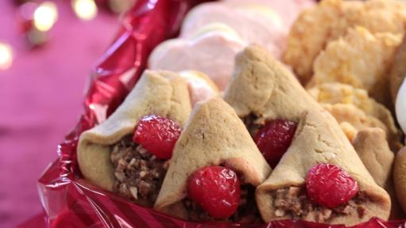

Spice Bells

Description
This is an old family recipe that has become a favorite in my household. A holiday-spiced
cookie dough is stuffed with a cherry and walnut filling and folded
to resemble a "bell" shape. Half a marschino cherry serves as bell's clapper.
Spice bells have become one of my favorite Christmas cookie recipes and they are sure
to find a place of prominence on your own holiday cookie tray!
Ingredients
- For the Dough
- 1 Cup Butter
- 1 1/4 Cup Brown Sugar
- 1 Egg
- 1 Tablespoon Cream or Sour Cream
- 3 Cups Flour
- 1/2 teaspoon Baking Soda
- 1/2 teaspoon Salt
- 1 teaspoon Ginger
- 1/2 teaspoon Instant Coffee
- For the Filling
- 1/3 Cup Brown Sugar
- 1 Tablespoon Butter (melted)
- 3 Tablespoons Maraschino Cherry Juice
- 1 1/2 Cups Chopped Walnuts
- Chopped Dates (if desired)
- 12 Maraschino Cherries (halved)
Steps
- Preheat oven to 375 degrees F.
- In a stand mixer or using a bowl and hand mixer, cream together the butter
and brown sugar until fluffy and light in color (about 2 minutes). Using a silicone spatula, scrape
down the sides and bottom of the bowl.
- Mix in egg and sour cream. until well combined. Scrape down the sides and bottom of the bowl.
- In a separate bowl, wisk together flour, baking soda, salt, ginger, and instant coffee.
- With the mixer running on low, gradually add the dry ingredients until just combined. Scrape down the
sides and bottom of the bowl.
- Roll out dough on a lightly floured surface. Using a round 2 inch cookie cutter, cut dough
into circles.
- Spoon 1 tablespoon of filling on the lower half of each circle. Fold the sides in at the top 1/3 of the
cookie to form a bell shape. Place half a cherry in the filling to form the bell clapper.
- Bake for 8-10 minutes or until cookies have browned slightly.